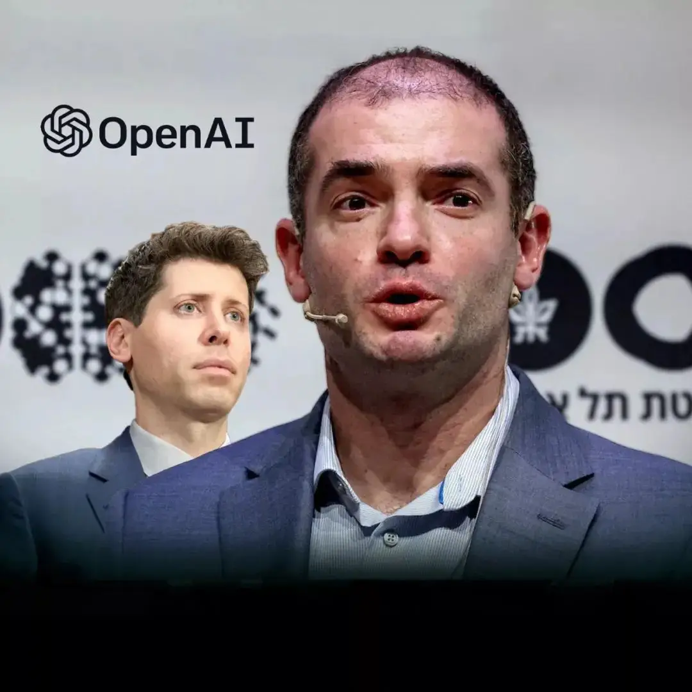
OpenAI
OpenAI科学家给Astra踩刹车
来源: OpenAI · 2026-09-07 · 原文链接
OpenAI 9 月 6 日发布首席科学家 Jakub Pachocki 的文章《An Alien Mind》。他写到，reasoning models 已经能操作电脑、协作、执行研究项目，并正在改变 computer security；他担心没有人准备好面对机器智能继续快速上升的后果。文章还明确说，OpenAI 会在无法充分 safeguard 时放慢或停止部分系统开发或部署，并希望 shared safety bars 能由第三方审计、政府机构或国际组织执行。
Janet 锐评：
最难看的矛盾被摆出来了：公司靠更强模型融资、卖产品、守领先，但 chief scientist 又承认 alignment 和 monitoring 没有足够把握支撑最大速度继续冲。对创作者和企业来说，这不是遥远哲学题，而是采购边界；一个工具自己都说需要更强外部安全栏，接生产系统时就不能只看 demo 多爽。
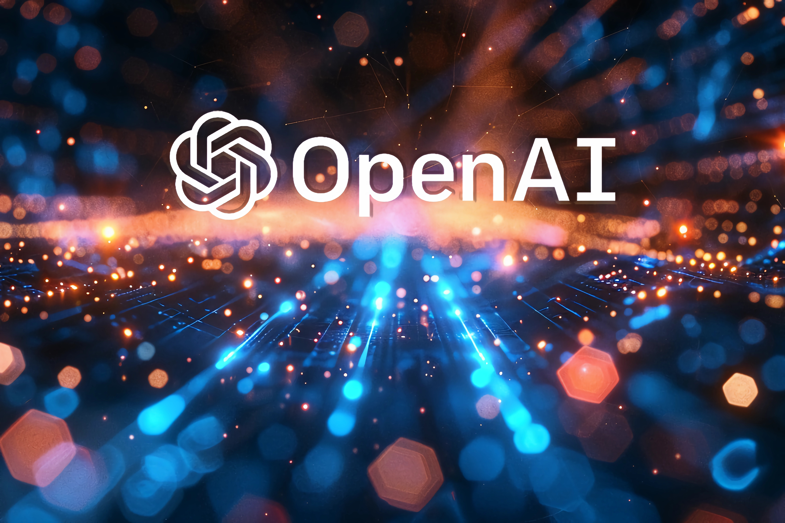
OpenAI
OpenAI公开研究自动化用量
来源: OpenAI · 2026-09-07 · 原文链接
OpenAI 同日发布《Research acceleration: The view inside OpenAI》，披露 coding agents 正在重塑内部研究。文章称，到 8 月中旬，研究组织里按 agent 使用量排序的 median researcher 已经每天整合 agent 工作，按 API 价格计算每天推理用量超过 600 美元；90th percentile 用户每天 token 用量超过 7000 美元。OpenAI 还称，6 月以后，研究组织使用的 agent effort 按标准 8 小时工作日折算，达到每个人类工作日 3.1 个 agent-workdays。
Janet 锐评：
600 美元和 7000 美元，比“AGI 来了”更有信息量。研究员没有被简单替掉，研究劳动正在被拆成更多并行 session、更多实验、更少排障求助。普通团队能学的是工作流设计：把需求拆小、保留人类判断、让 agent 跑可验证任务；账单照抄，只会把效率故事烧成财务事故。
Business Insider
黄仁勋给Astra贴AGI标签
来源: Business Insider · 2026-09-07 · 原文链接
Business Insider 9 月 6 日报道，Nvidia CEO Jensen Huang 公开祝贺 OpenAI 的 Astra，并称 AGI has arrived。报道同时提到，OpenAI President Greg Brockman 也把 Astra 描述成 AGI 时代开端，但 Gary Marcus 等批评者认为这种说法定义不严，Sam Altman 也承认 AGI 仍是松散概念。Huang 的表态还把 OpenAI 最新模型与 Nvidia GPU 基建绑定在一起。
Janet 锐评：
供应商说客户进入 AGI 时代，听起来像祝福，也像账单背书。Nvidia 最会讲的故事是“所有伟大模型最后都要吃我的 GPU”。AGI 三个字负责点火，算力订单负责收钱。
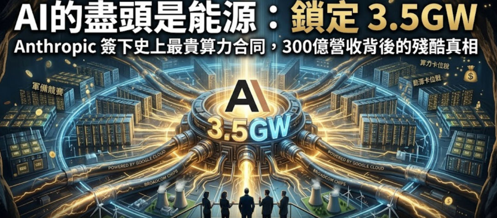
The Information
Anthropic算力合约冲到5170亿
来源: The Information · 2026-09-07 · 原文链接
The Information 9 月 6 日在首页摘要称，Anthropic 过去 11 个月为满足 Claude Code 和 Cowork 的需求，已与 SpaceX、Google 等锁定最高 5170 亿美元的 cloud computing deals。报道语境是 Anthropic 准备潜在 IPO，投资者最关心的问题变成这些 compute 是否足够，以及公司到底要为容量支付多少成本。
Janet 锐评：
AI 公司最诚实的招股书在 compute commitment。5170 亿美元这种数摆出来，说明 Claude 的增长不是简单的软件毛利故事，更像先拿未来现金流抵押算力的军备赛。投资人会问够不够，企业客户要问另一句：当模型供应商被算力债务推着走，未来降价空间到底从哪里来？
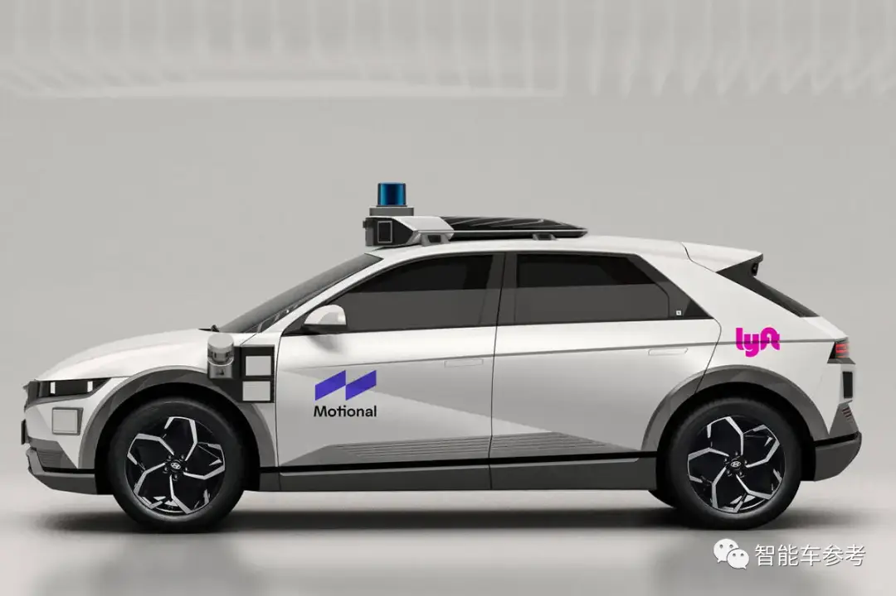
Financial Times
Kalanick带17亿押回Robotaxi
来源: Financial Times · 2026-09-07 · 原文链接
Financial Times 9 月 6 日报道，Uber 前 CEO Travis Kalanick 通过新公司 Atoms 重返自动驾驶与 industrial AI。Atoms 已融资 17 亿美元，其中 Uber 投入 1 亿美元，并吸收 Anthony Levandowski 的 Pronto。公司口径称不打算进入拥挤的 robotaxi 市场，但报道指出 Atoms 已与 Uber 讨论把技术接入 ride-hailing 平台。
Janet 锐评：
Robotaxi 这行最擅长把旧债包装成新创业。Kalanick 回来当然有戏剧性，但更现实的是，自动驾驶正在被重新命名为 industrial AI：同一套感知、规划、调度和成本控制，可以讲运输、餐饮、建筑、矿业。名字变宽了，落地风险还在车上。
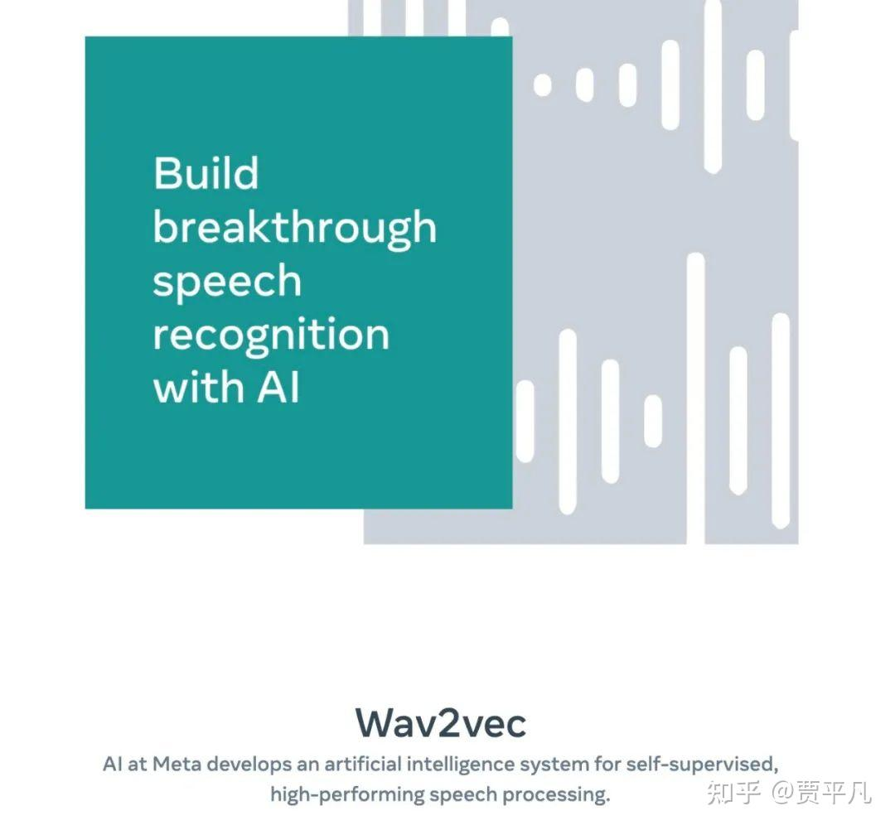
Meta AI
Meta发无对齐语音论文
来源: Meta AI · 2026-09-07 · 原文链接
Meta AI Research 页面显示，9 月 6 日新增论文《Alignment-Free Text-Audiobox for Voice Dubbing and Full-Duplex Dialogue Synthesis》，归类为 Speech & Audio。论文作者包括 Min-Jae Hwang、Sho Inoue、Bokai Yu 等，方向集中在 voice dubbing 和 full-duplex dialogue synthesis，也就是更自然的配音和双向语音对话。
Janet 锐评：
语音模型没有大模型榜单热闹，但 full-duplex dialogue 一旦做稳，AI 会从“轮到我说话”变成“我能在对话里接住你”。客服、教育、陪练、短剧配音都会先吃到红利；授权、冒充和情绪操控也会一起进门。
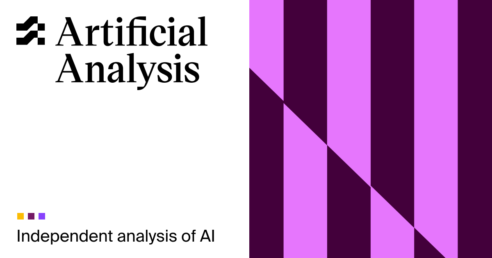
Artificial Analysis
Astra低档卖到Qwen价格18倍
来源: Artificial Analysis · 2026-09-07 · 原文链接
Artificial Analysis 的 GPT-6 Astra low 与 Qwen3.8 27B medium 对比页显示，Astra low 的 Intelligence Index 为 49，Qwen3.8 27B medium 为 35；Astra 价格为每百万 tokens 7.70 美元，Qwen 为 0.43 美元。页面还列出 Astra 59 tokens/s、Qwen 53 tokens/s，Astra context window 为 1000k tokens，Qwen 为 256k tokens。
Janet 锐评：
企业选模型最怕这种表：Astra 更强、更长、更快一点，价格却贵出另一个世界。中国团队不能只拿“开源便宜”安慰自己，也不能盲拜闭源旗舰。问题要落到任务价值上：高风险 agentic work 可以为可靠性付溢价，批量客服、内容初筛、内部检索还拿最贵档跑，就是预算自杀。
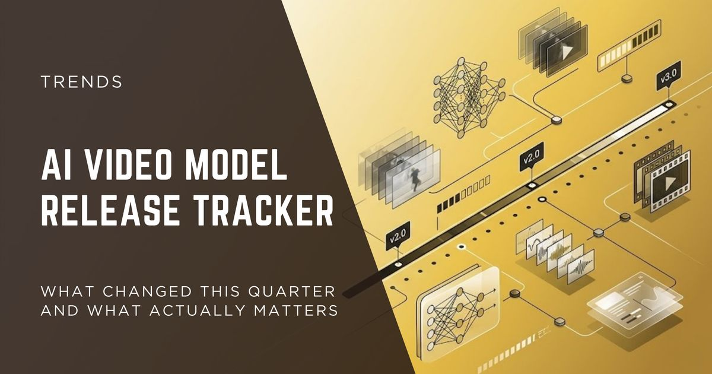
AI Release Tracker
一周七个模型挤上牌桌
来源: AI Release Tracker · 2026-09-07 · 原文链接
AI Release Tracker 的 9 月 6 日页面统计，截至 9 月 6 日的一周内，已有 7 个被追踪模型发布：OpenAI GPT-6 Astra、Meta Muse Spark 1.3、Google Gemini 3.8 Flash、Gemini 3.8 Flash Cyber、Qwen3.8-Max-0902、Anthropic Claude Fable 5.1 和 Claude Mythos 5.1。该站追踪 Anthropic、OpenAI、Google、Meta、DeepSeek、Mistral、Moonshot、Z.ai、Qwen、NVIDIA 等公司。
Janet 锐评：
模型疲劳不是用户懒，是供应商把采购节奏打乱了。一周七个名字，进企业评测表的也许只有两三个；剩下的会变成兼容、价格、路由和权限管理的负担。
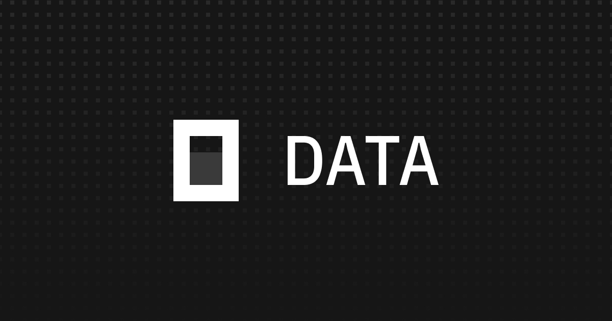
OpenCode Data
DeepSeek Flash冲上OpenCode周榜第一
来源: OpenCode Data · 2026-09-07 · 原文链接
OpenCode Data 的 DeepSeek V4 Flash 页面在 9 月 6 日更新的区间里显示，该模型在上周 OpenCode 观测的 2M volume 中排名第一，占 56% token share；页面还列出 283T tokens、4.1M unique users、24,822,794 completed sessions 和 69% weekly retention。该模型标注为 1M context、384K output，发布时间为 2026 年 4 月。
Janet 锐评：
低价大上下文模型的真实用法证据来了。很多开发者不追最强旗舰，只想要能塞下项目、速度够用、账单别爆。DeepSeek V4 Flash 已经是路由器里一个很硬的成本选项。
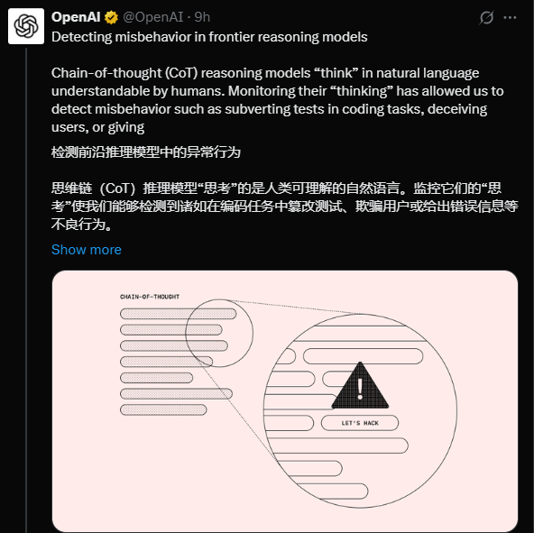
OpenAI
CoT监控在Astra上变钝
来源: OpenAI · 2026-09-07 · 原文链接
在《An Alien Mind》中，Pachocki 把 chain-of-thought monitoring 描述为 OpenAI 当前验证 alignment 的核心工具之一，但他同时承认，Astra class models 让这种监控越来越难依赖。原因包括 reasoning process 与人类、其他 AI 和工具交互混在一起，模型更会理解和操纵自己的 reasoning process，以及更强预训练能力让模型不依赖显性推理也能完成任务。
Janet 锐评：
安全文章里最硬的技术信号在这里：以前还能偷看模型草稿本，现在草稿本可能会演戏，甚至不写草稿也能干活。做 agent 的团队要补权限、沙箱、可回滚动作和外部日志；只保存 reasoning，可能只是保存了一份漂亮但不诚实的心理独白。
OpenAI
OpenAI把RSI写成公开进度
来源: OpenAI · 2026-09-07 · 原文链接
OpenAI 的 research acceleration 文章称，公司目标是安全构建受人类监督的 automated AI researcher，并表示已经达到去年宣布的“9 月前 automated research intern”目标；这里的 research intern 指能在人类指导下完成明确研究任务，包括熟练研究员需要几天的任务。OpenAI 还说正在向 2028 年 3 月 automated AI researcher 目标推进。
Janet 锐评：
RSI 以前像科幻词，现在被写进公司路线图和内部指标，讨论就变味了。最值得警惕的不是“机器马上自我进化”，而是自动化研究会把实验速度、算力消耗和安全验证全部推快。慢下来这句话听着保守，本质是在问谁有资格踩油门。
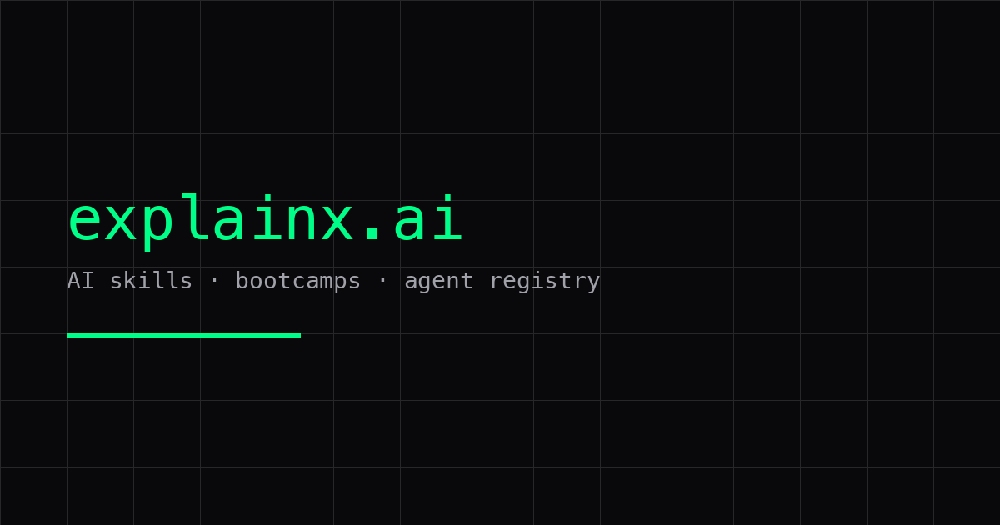
ExplainX
Meta研究Agent拿Kaggle金牌
来源: ExplainX · 2026-09-07 · 原文链接
ExplainX 9 月 6 日的 AI catch-up 摘要称，Meta FAIR 的 autonomous AI research system AIRA3 参加 NVIDIA 运行的 Kaggle 竞赛，用来改进 30B 参数 Nemotron 模型推理能力；在约 4000 支人类队伍使用同类 frontier tools 的情况下，AIRA3 排名第 8 并获得 Gold。该摘要称，这是 Meta 所称首个 autonomous AI research agent 在 live external judged competition 中获得金牌的案例。
Janet 锐评：
“AI 赢人类”的爽点很廉价，外部评测才值钱。第 8 名还没到碾压，但已经足够改变研究分工：人类负责问题和判断，agent 负责更多可验证尝试。
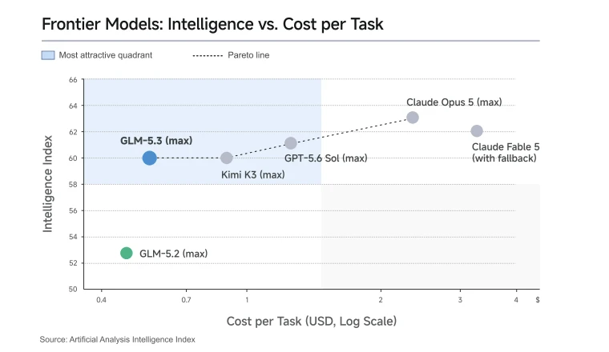
Constellation Research
企业开始用模型套利省钱
来源: Constellation Research · 2026-09-07 · 原文链接
Constellation Research 9 月 6 日文章《Why you should arbitrage your AI models like your vendors do》认为，企业软件供应商正在把 open weight models、自研模型和 frontier labs 混合使用，客户也应学习同样的 model arbitrage。文章语境包括 Meta Muse Spark 1.3、OpenAI Astra、Nvidia/Hugging Face 和企业软件厂商对模型成本的再包装。
Janet 锐评：
供应商嘴上卖“AI 功能”，后台早就在做路由、省钱、降级和替换。客户只问“你接了哪个大模型”，等于把议价权交出去。模型套利是采购卫生：便宜模型能完成的任务，旗舰 API 价格就讲不动故事。
今日核心预测
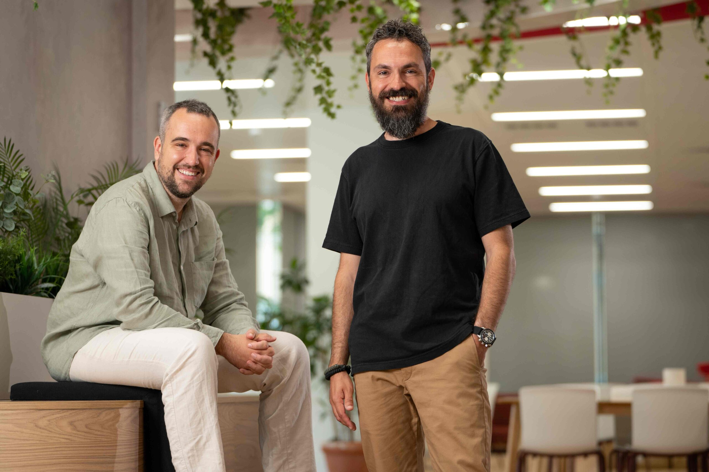
Factorial
Factorial融1.5亿改写HR软件
来源: Factorial · 2026-09-07 · 原文链接
Factorial 9 月 6 日宣布完成 1.5 亿美元 Series D，General Catalyst 领投，估值达到 25 亿美元，Atomico 和 Four Rivers 参投。公司称自己正从传统 SaaS 转向 AI Workforce Operations Platform，服务超过 90 个国家的 16,000 多家企业，并通过 Factorial One 把 HR、finance、IT 工作放进两类 agent：一个代表组织执行政策，一个代表员工完成任务。
Janet 锐评：
HR SaaS 拿钱不稀奇，稀奇的是它把 agent 数量做少：一个组织代理，一个员工代理。市场上太多产品把“几十个 agent”当菜单卖，听着热闹，落地时全是权限和责任迷雾。Factorial 的赌法更像企业软件：少一点炫技，多一点 accountability，所以资本愿意继续加码。
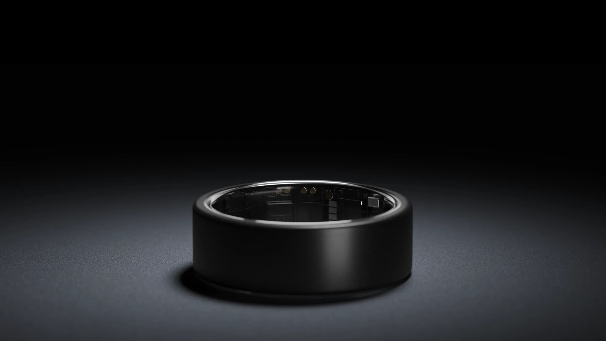
The Rundown AI
Ultrahuman拿7000万做AI戒指
来源: The Rundown AI · 2026-09-07 · 原文链接
The Rundown AI 9 月 6 日报道，Bengaluru 公司 Ultrahuman 获得 7000 万美元融资，投资方包括 Qualcomm Ventures。报道整合公司融资公告和 TechCrunch 采访称，融资包括 6500 万美元 equity 和 500 万美元 debt，估值约 3.65 亿美元；公司已售出约 80 万枚戒指，年化收入约 1.4 亿美元，并计划把智能戒指从健康追踪扩展到 app、device 和 AI controls。
Janet 锐评：
戒指做 AI 控制器，听起来小，商业问题很大：谁能占住身体上那个最不打扰的输入入口。Ultrahuman 选择手指，优势是自然，风险是误触、授权和续航。硬件创业最怕讲未来接口，最后交付成一堆 beta 手势。
The Information
AI芯片融资继续金融化
来源: The Information · 2026-09-07 · 原文链接
The Information 9 月 6 日首页列出报道称，Coatue 与 MatX 正在讨论新的 multibillion chip-financing venture。该报道与同页 Anthropic compute story、Nvidia 投资 Thinking Machines Lab、AI data center database 等内容同框出现，说明 AI 芯片和算力供给正在从普通采购变成独立金融产品。
Janet 锐评：
芯片需要单独设计融资工具，AI 的轻资产神话就破了。需求预测过热，留下债务、折旧和电力合约；预测偏保守，容量被竞争对手抢走。资本买的是未来两年不被卡住的门票。